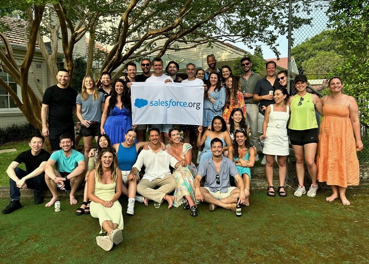

A Salesforce Bi-Product — Since Day One
Small town. Big ambitions. Travelled the world, built award-winning teams in London, discovered my real skill wasn't the industry — it was building people. Headhunted into Salesforce with no idea what a CRM was. Became a BDR, Team Lead, then AE. And now I'm coming back to where it started.
Before Salesforce: Operations Director · St Pancras Spa London · Residential Spa of the Year · Endota Spas Sydney
The Track Record
252% S4
as BDR
Q3 Overachievement
Quota
Q1 & Q3
— Phoebe Wilkinson
What I Built Since January 2025
- 107% FY26 quota while investing in leadership above the line
- VTO Officer, Public Sector — presents at ANZ Public Sector APAC call monthly
- Leadership Accelerate graduate · FY27 Mentor Circles (Symmetra) — 2nd year
- Referred Phoebe → Global SDR of Q1 → promoted to BDR
- Built 10 Slackbot skills + State & Local Gov BDR Coach
Why I Hit the Ground Running
- Programs & Data: Already working with Abigail Taylor — programs mapped, aligned before Day 1
- Relationships: Know most BDRs. Strong credibility with Pub Sec AEs, ECS, RSDs, RVPs, AVPs. Matt Masters and Karan Virk actively engaged.
- Team Knowledge: Already know people's strengths, gaps, ambitions. Individualised coaching plans from Day 1.
I Build Communities, Not Just Teams
BDR is a hard job. The teams that stay resilient, motivated, and high-performing aren't just managed — they're part of something. That's what I build. Always have.


"I am at a point in my career where I want to give back — not because I've run out of things to learn as an AE, but because the most meaningful use of what I've built is investing it in the people coming up behind me."